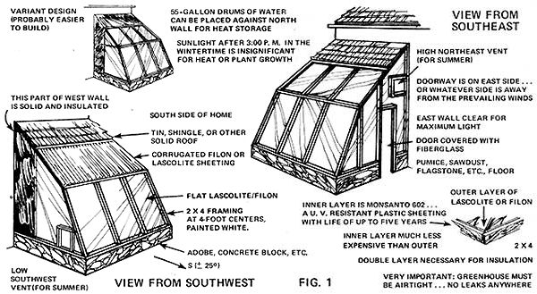
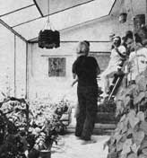
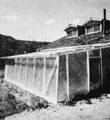

The basic drive behind alternative energy research is to achieve maximum output of energy from the least possible input (and consequently the least possible drain on the environment). Although the law of entropy tells us that there can be no gain without a certain percentage of loss, th.e primary aim of the experimenter with natural power sources is to shave that percentage down to its irreducible minimum. Therefore, while we know that there aren't any "free" lunches, we also know that some lunches are a heck of a lot cheaper than others.
That "free lunch" metaphor is more than just a figure of speech. When one reflects on the fact that current agribusiness practices in this country require about twenty calories of energy in the form of petroleum to produce only one calorie of energy in the form of food, it becomes obvious that the connection between Exxon and Safeway is a lot closer than it might appear at first glance. The entire process would be considerably more efficient if we could learn to drink our meals directly from the gasoline pump!
It follows that those of us who don't relish the idea of some ex-camel drover or corporation fat cat having virtual control over our victuals would do well to start cultivating our own gardens. Unfortunately, in most sections of this country, a vegetable patch is strictly a seasonal affair. Animal protein can generally be raised in any season, but the majority of food plants won't grow during the winter unless you happen to live in the tropics.
Enter the solar greenhouse . . . an invention so simple and productive that I regard it as the single most effective alternative energy device anyone can possess. Wind electric systems, methane digesters, and solar collectors might well be added later in your progress toward self-sufficiency, but a sunwarmed growing area built onto the south wall of your dwelling will probably yield more immediate benefits at less cost than all the other equipment combined.
First of all, just what do we mean when we refer to a "solar" greenhouse? Don't all such gardening structures fit into that category (since they all make use of the sun's energy)? The answer, of course, is "yes". Generally speaking, though, a "solar" greenhouse differs from others by receiving all its warmth from the sun and using no auxiliary heater as backup. (Actually, I feel that the adjective "solar" is redundant . . . but since the term "solar greenhouse" is now part of our language, I'll use it.)
Readers of my "Build Your Own Ecosystem" series in MOTHER NOS. 28 through 31 will recall that the system I'm working with is based on the concept of the "growhole" or pit greenhouse, which is a gardening structure built below ground level to take advantage of the insulating properties of the earth itself.
Since I don't use a backup heater, my growhole qualifies as a solar greenhouse (of a rather unsophisticated type). While such a facility has definite advantages, it has some drawbacks as well . . . most notably the fact that some of the heat collected in cold weather is vented outside and wasted. On many a day last winter, when the Ashley heater in our home was consuming firewood by the cord, I regretted that I hadn't built the greenhouse in such a way that it could spill its excess warmth into the house.
Then, at a recent solar energy conference, I met Bill Yanda . . . a man who has pioneered the construction of solar greenhouses in New Mexico, specifically as a means of providing low- and middle-income families with auxiliary heat in winter and with food all year long.
In July of 1974, Bill received a small grant from the Four Corners Regional Commission to construct and supervise the initial operation of 11 greenhouses in various villages of northern New Mexico. These units are located in several different climatic and geographical locations, ranging from altitudes of less than 6,000 to over 8,000 feet . . . from the lowlands around the Rio Grande all the way to the mountain community of El Valle, which has an outdoor growing season of less than 90 days.
The idea behind Bill's greenhouse-shown in Fig. 1-is simplicity itself: An ordinary stud framework is built onto the south wall of a home, and covered with a double layer of Filon or Lascolite greenhouse-grade fiberglass sheeting. (Filon and Lascolite are trade names for products which differ about as much as Fords and Chevrolets. These materials have a life expectancy of up to 20 years, are specifically designed for the spectral requirements of plants, and-unlike glass-are virtually unbreakable.)
The greenhouse is vented into the dwelling through existing doors or windows, or with specially constructed ventilator flaps, and additional vents are included to control the add-on structure's temperature in the summer when the growing area is closed off from the home. Various methods of shading are also provided to keep the summer temperatures from getting out of hand. The accompanying photos give an idea of some of the many possible variations in design.
The fabrication of such a unit is straightforward and simple, within the skill range of even the most inexperienced handyman. Bill estimates that the cost of the average structure comes to about $1.86 per square foot, and quickly adds that the price could be considerably less for experienced scroungers.
Yanda's greenhouses can be found coupled to almost any type of architecture: built against the side of an old adobe house in downtown Santa Fe, or onto an aluminum-skinned mobile home out in the boondocks. Even if your dwelling doesn't have a south-facing wall, a southeastern or southwestern exposure will serve almost as well. About the only ironclad "no-no" is a site that looks north (unless you're interested in raising nothing but shade-loving houseplants).
The operating principle of Yanda's add-on unit during the winter growing season is that the greenhouse provides a considerable amount of heat for the home in the daytime . . . and, at night, the household heating system helps-in turn-to keep the sheltered plants from freezing.
According to Bill: "Though the home return heat to the 55o:, ... § `I=a . .-_,a .- , _ greenhouse overnight, there's still a positive gain in ,the opposite direction during the winter. In other words, in this climate you collect more warmth during the day than you spend after dark. In addition, heat retention can be increased with rocs, storage, or by stacking water-filled drums on the north wall of the unit."
So impressed am I with the simple practicality of Bill-s design that I'm going to add one of his structures onto our house in time to have it supplement our home's heat this winter. During the day, the greenhouse will warm the living room . . . and at night, an Ashley heater will keep the thermometer in the growing area from dropping below 40° F (the theoretical minimum temperature to which a growing area can be allowed to fall and still perform efficiently).
None of the Yanda greenhouses that I visited actually haul stoves installed in them, but depended instead on the home heating system to provide warmth after sundown. In some cases this worked out well enough. At the higher altitude though, the nights can get really cold and a little wood-burner is cheap insurance in December and January.
Bill, who lives at an altitude of 6,400 feet-considerably lower than my own location-left his unit open to his home (without supplemental heat) during the coldest period of the winter, and reports that "the greenhouse temperature average from November 1 to February 1 were 42.8° F (low) and 80.4° F (high). If the structure is closed off from the house during the night, the lower figure drops about 5 additional degrees,"
Most participants in Yanda's research project were more interested in heating their dwellings than in raising food and did, in fact, close off their greenhouses overnight. Even so. they managed to produce cool-weather crops such as lettuce, onions, and cabbages. A simple insulating cover-such as Steve Baer's "Night Wall", for example-on the shelter's south face and clear roof areas should improve growing conditions by raising the minimum temperatures in the coldest period to 50° F, a figure. within the optimal range for winter horticulture. Yanda plans to test this refinement of the design over the coming months.
If we put aside the unit's food-growing potential for the moment and consider it just as a solar heater, the performance of Yanda's device is impressive. Bill calculates that one square foot of southfacing greenhouse panel will meet the heating requirements of between one and three square feet of dwelling space . . . depending on conditions.
Bill and I, in fact, both believe that most of the fuss and bother over solar collectors is a waste of money and time. Government and industry are spending millions of dollars in an effort to come up with the perfect solar panel, yet it seems to us that-in terms of the cost/benefit ratio-the Yanda greenhouse meets all the requirements for such a device . . . and then some. After all, you can't raise vegetables in a flat-plate collector!
"Fine," you say, "but what happens in summer, when the last thing I want in the house is extra heat?" No problem! From late spring through early autumn the greenhouse is closed off from the main living quarters, and ventilation is accomplished by auxiliary vents which release unwanted wannth to the outside air. Shading is also an important part of temperature control, but need be nothing more complicated than an awning or bamboo curtain which is adjusted each day to keep out excess solar radiation. (Actually, I've never resorted to shading my ecosystem growhole in the summer . . . mainly because I haven't been able to afford an awning that big. The plants do sometimes wilt during the hottest part of the day, but always recover by evening and certainly continue to grow and thrive.)
In most of the greenhouses constructed for Bill's project, shading is an integral part of the structure. The photo of the growing area built by Rick and Lisa Fisher of El Valle, New Mexico shows a type of roof which allows all the winter solar radiation to enter, yet blocks part of the intense summer sun (an arrangement which does away with the need for an exhaust fan). Fig. 2 illustrates the principle behind this design.
Readers of my "ecosystem" series are perhaps wondering how such a greenhouse would adapt to the integrated systems (hydroponics, aquaculture, wind power, etc.) with which I've been working for over two years. Well, I see no reason why such projects shouldn't work perfectly in a Yanda greenhouse. In fact, Bill's design should be even more efficient than the one I'm using now, since-in addition to being cheaper and easier to build-it adds the dimension of supplementary heat to the home. I fully intend to combine most of the ecosystem concepts with my new solar greenhouse, and expect that the results will equal or surpass those of the growhole I already have in operation.
Finally, a word on the use of Bill's design outside this geographical area: Yanda takes pains to stress that his design was intended for the climate of northern New Mexico . . . and, in fact, he often refers to the unit as "the Rocky Mountain attached greenhouse". The basic idea, however, is simple enough to be adapted to a wide range of conditions. Naturally, certain modifications might be required to operate the device successfully in Minnesota or Hawaii, but anyone with gumption enough to build one of these easily erected structures should be able to modify it to his own needs and surroundings. One thing is for sure: With inflation and the energy crisis getting worse by the day, installations like Bill's could provide us all with some real security for the hard times ahead.
The idea, of course, is still in an experimental stage and its value can't be assessed accurately until several growing seasons have passed. Meanwhile, Bill is writing a book about solar -greenhouse construction and operation (in collaboration with Rick C. Fisher, coauthor and artist) . . . and I for one, await its appearance with great interest.
Note: Since I announced in MOTHER NO. 30 that 1 was writing a book about the ecosystem concept, I've received over 300 letters from folks who want more information. Well, our original plans for that work were, to say the least, premature.
We've learned so much in the last year that the publication project just keeps growing. Findings on carbon dioxide implementation, photoperiod, and organic hydroponic solutions have all modified my original idea, and-since we want the study to be as complete as possible-we're going on with the research. The book is now slated to come out by the end of the year, and we think it'll be worth waiting for.
I'm excited by the populist, grassroots potential that alternate energy promises. However, if the government and large corporations dominate the research and production of the necessary equipment, you can bet that promise will be unfulfilled.
The people who could use low-cost alternate energy systems the most aren't even aware that they exist.
If an independent energy system like the photovoltaic cell could be produced and sold at a low cost, it would never be allowed to hit the market. It's too threatening to the power monopolies. I was in on the beginning of the revolution in electronic calculators, and they dropped in cost by a factor of 100 in eight years. The technology is here to make that happen in the photovoltaic cell industry, but don't hold your breath.
Many of the systems 1 see are high on the Rube Goldberg factor. I think the key to making an alternate energy setup work for you is to keep it as simple as possible. There are a lot of complicated things you can do to make a greenhouse work better, but they all demand your time, energy, and money. It's best to have a good design for your area and work within its limitations.
Greenhouse operation is a great way to study the earth in microcosm. It's fascinating to have the life functions that support the planet going on right there in that shelter outside your kitchen window.
[11 Every vegetable that comes out of the greenhouse and onto the table is one less that has to be fertilized, processed, and shipped around the country . . . and when you grow food yourself, you know what it contains!
[2]The easiest way to increase food production is to lengthen the growing season. Here in northern New Mexico, for instance, we're trying to stretch a threemonth season to twelve.
[31 The greenhouse owner has space to start garden seedlings early, and can sell some for added family income.
[41 Utilization of vertical space makes a greenhouse more productive than a garden of the same square footage . . . and the resultant space-conserving nature of the design makes this addon all-year garden feasible for urban as well as rural dwellers.
[51 In dry areas like New Mexico and much of the Southwest, the closed environment of the greenhouse conserves water.
[61 The excess or waste heat from the top of the greenhouse goes directly into the house, and the structure thus becomes a supplemental heating unit.
[71 The greenhouse is an attractive and healthful addition to a home. Ours provides space for our infant daughter's sandbox and gives her a bright, sunny area in which to play all winter.
-Bill Yanda
|
 Southwest and southeast views of Bill Yanda's add-on greenhouse, with some notes on materials and construction. |
 Rick and Lisa Fisher s unit, with partially shaded roof. |
 A version by Fidel and Esta Gutierrez, of Velarde, N.M. |